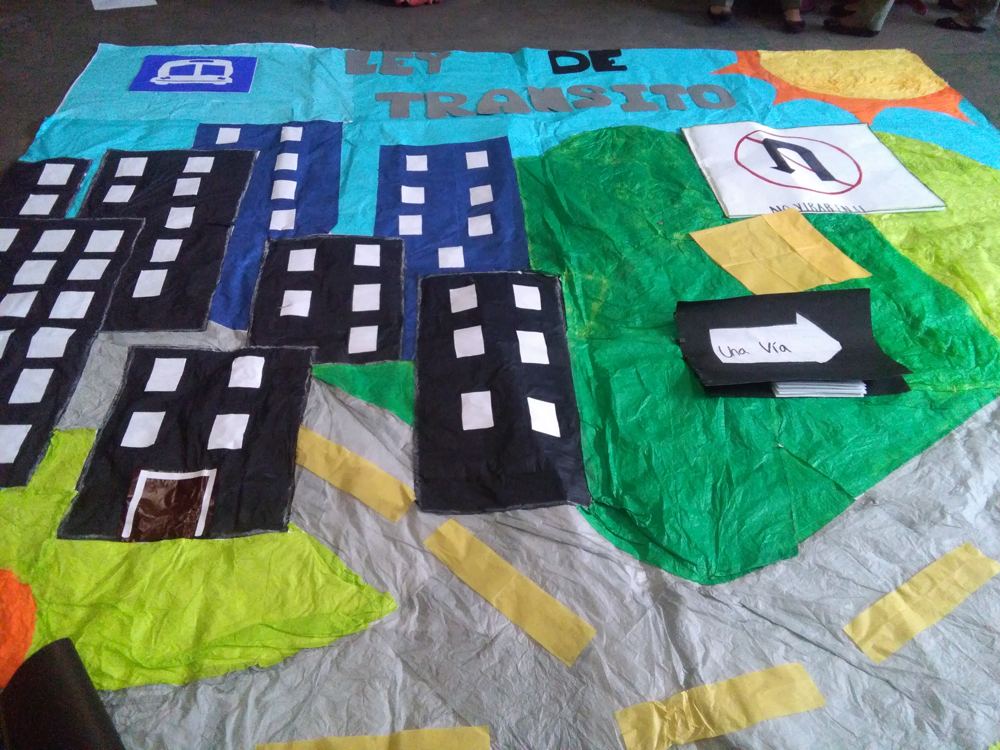

Un seminario es una junta especializada que tiene naturaleza tecnica y academica, y cuyo objetivo es el de llevar a cabo un estudio profundo de determinadas cuestiones o asuntos cuyo tratamiento y desarrollo requiere o se ve favorecido cuando se permite una interactividad importante entre los especialistas y los participantes. Se consideran pues seminarios aquellas reuniones que presentan estas caracteristicas.
El numero de horas de los mismos es variable. En "congresos" o "encuentros" pueden tener una duracion de solamente dos o tres horas, pero existen seminarios mas importantes con reuniones semanales, y que pueden llegar a durar uno o hasta dos años, principalmente en Instituciones de Educacion Superior. Lo usual, es que un seminario se desarrolle en uno o varios dias y en forma intensiva, en muchos casos durante un fin de semana.
seminario es una de las materias que mas llaman la atencion como alumno es una materia
donde unu aprende mucho sobre valores respomsavilidades esfuerso trabajo en equipo ya q e esta al principio uno lo hace solo pero asu devido tiempo llega la mentada cominidad donde uno empeña un papel lla mas responsable en esta lla que en esta se lleba acabo muchos trabajos donde el valor que tenga este sera para todos los integrantes.


- 